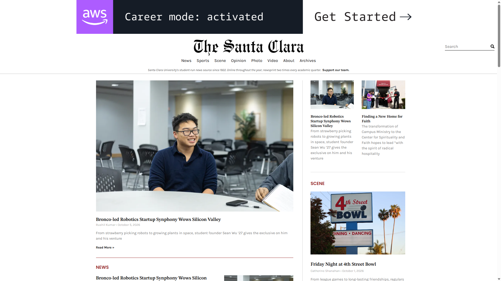
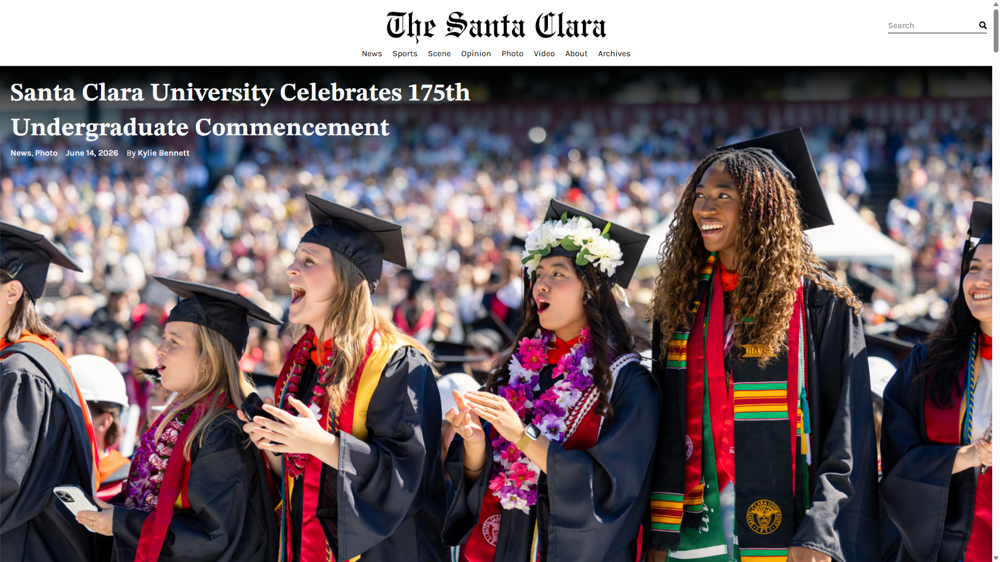
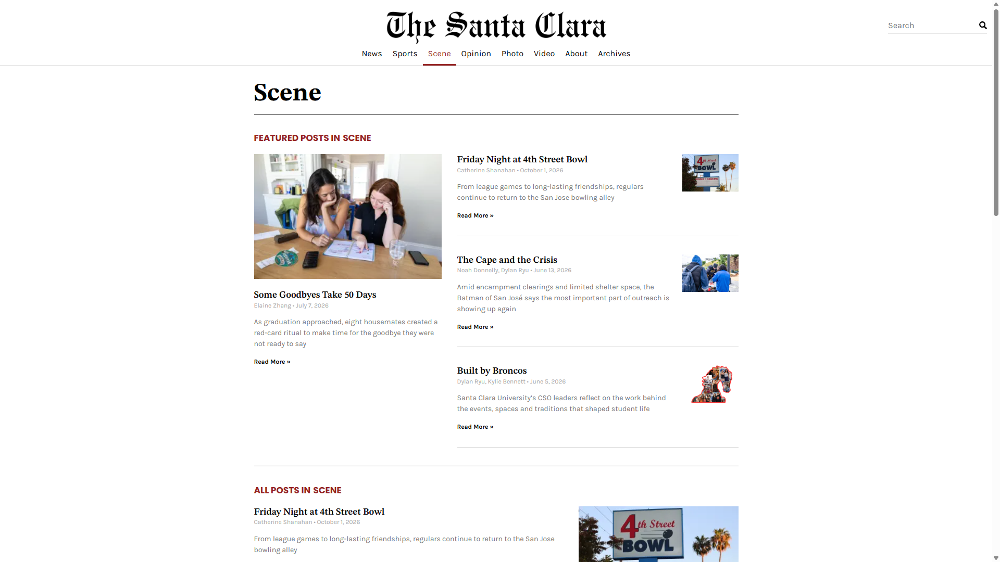
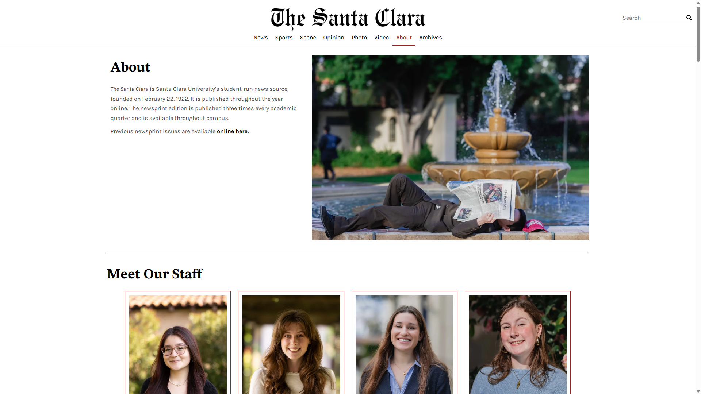
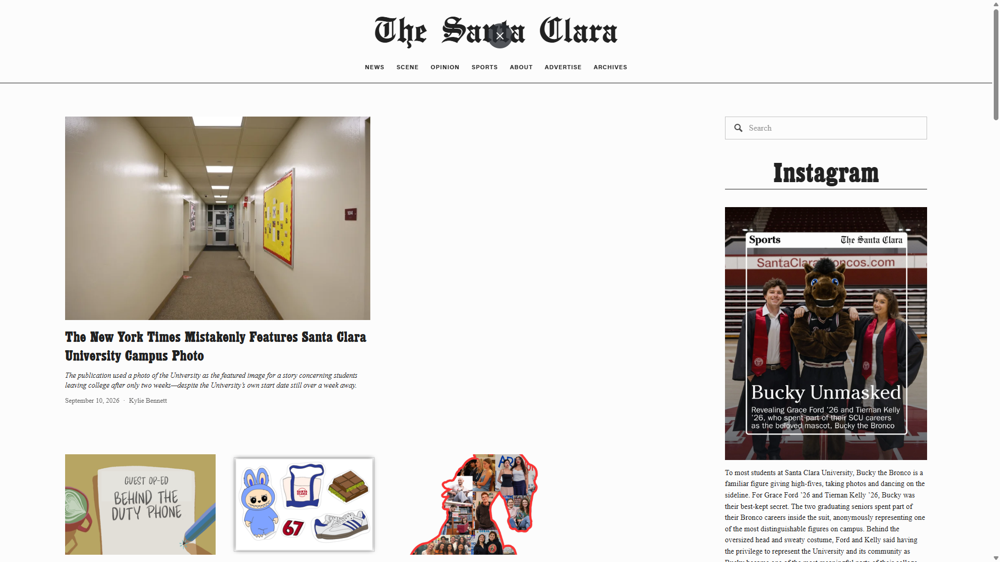
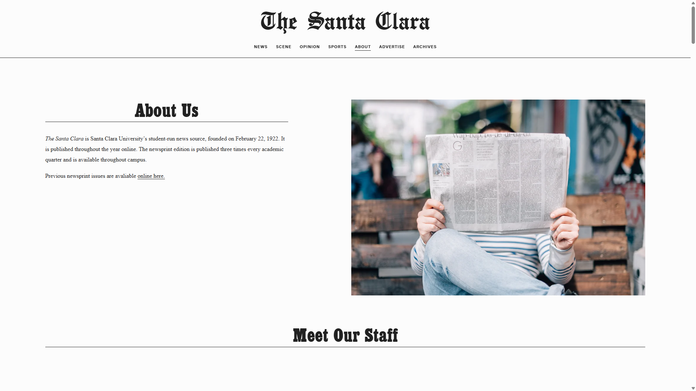

The Santa Clara Newspaper : Santa Clara University’s student-run news source

The Santa Clara is Santa Clara University’s student-run news source, founded on February 22, 1922. It is published throughout the year online. The newsprint edition is published three times every academic quarter and is available throughout campus.
I was called upon as a friend of the former Editor-in-Chief and the upcoming Editor-in-Chief towards the end of the 2026 school year to redesign their Squarespace website on WordPress. This change was necessary for TSC to help them resolve various issues they had been having with the old website. For instance, it was impossible for them to add multiple authors on one post without creating a new psuedo-author that contained both names. They were also reaching the limits of how many authors they could add. Plus, Squarespace had much less flexibility when it came to the layout of elements, and their homepage lacked interactive carousels and features because of it.
During this project, I worked directly with Dylan Ryu, the former Editor-in-Chief, as well as Sofia Ruvalcaba and Kylie Bennett, the Editors-in-Chief for the upcoming 2026-2027 school year. I also worked with TSC's advisor, Prof. Lisa Davis, for final approval.
I also brought on Allan A. Báez Morales, the head of the SCU Frugal Innovation Hub, to act as my advisor for the project.
I started by interviewing the Editors-in-Chief to determine what they liked and didn't like about the old website. I got a sense of their plans for the old website, what the purpose of the transition was, and what they wanted the design of the new website to be. TSC had their original website turned into thesantaclaraarchives.org, a place where their old articles would be stored, and which could be accessible on the new website. Meanwhile, their new website is a more modern, interactive, and engaging website that has better author management, search filters, print archives, and different types of articles (photo and video). It also includes a Newsletter generator, which allows TSC Staff to take recent articles from the website and compile them into email-ready HTML with a simple interface. Their new system is much easier than editing the code directly, which they had done before.
I then started work in WordPress, familiarizing myself with this environment and designing all the planned pages. I realized that an old attempt at a WordPress website still existed on the TSC account, and I was able to re-use it as a starting point--although a lot of work still needed to be done. Throughout the process, I learned key things about WordPress, such as the difference between WordPress' native editor and the Elementor plugin's visual editor, how Elementor templates work with display conditions, and how to best organize everything.
After about a month, and right before the new school year started, I had finished the website and had it approved by the TSC staff. I then took charge of transitioning the TSC domains, and stayed active on the project to ensure all small bugs were taken care of before TSC started posting articles. I also made multiple scripted instructional videos for TSC staff to help with essential functions of the website, such as writing and publishing regular, photo, and video articles, as well as newsletters.
The final website went live at thesantaclara.org on September 26th, 2026.





Old TSC Website (now thesantaclaraarchives.org)



New TSC Website (thesantaclara.org)